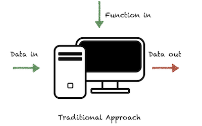
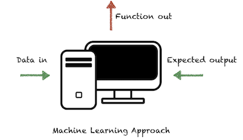
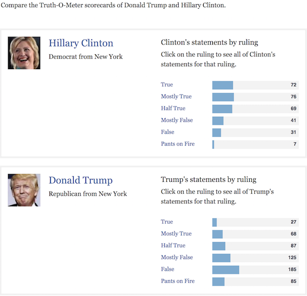

Machine Learning and Social Science
Xavier Vergés@XavierVerges IBM
Agenda
- How do <insert noun> learn?
- AI, ML, NLP, DL… Hints to navigate the alphabet soup
- Five main routes to Machine Learning
- Data is the new…
- Machine Learning and Social Science: Two Cultures
- Activity: read and tell
Objectives
I want the audience to
- Become familiar with some Machine Learning concepts
- Understand some of the risks of using data
- Become familiar with the differences of the main world views of Machine Learning and Econometrics
- Consider adding a new feedback loop to their life
In Praise of Feedback Loops
Outputs of a system are routed back as inputs as part of a chain of cause-and-effect that forms a loop. The system can then be said to feed back into itself.
Excited about a thermostat? Seriously?
No feedback, no learning.
No feedback, no science.
Evolution:
learning for genes
Culture:
learning for societies
Culture:
learning for societies
at a faster pace
Experience:
learning for individuals
Information technology:
a new way to learn
Information technology:
a new way to learn
at a faster pace
Think, write,
send to typist,
wait for typist,
wait for computer time slot…
... vs learn in a few hours
if your users like your new idea
Ah! So Machine Learning is
just a new fancy name for
good old computing?
Ah! So Machine Learning is
just a new fancy name for
good old computing?


Alphabet Soup
The AI Effect:
As soon as AI solves a problem,
the problem is no longer a part of AI
Project Debater
9:00 AM!
Supervised/Unsupervised Learning
Thanksgiving
The 5 Tribes of ML
From Pedro Domingo's The Master Algorithm:
The Symbolists
- Work with high-level, human-readable, representations of problems, logic and search
- Expert Systems
The Connectionists
- Focus on re-engineering the brain
- Artificial Neural Networks (Deep Learning)
The Evolutionaries
- Genetic Algorithms
The Bayesians
- Probability-based hypothesis that are updated as more data is processed
- Spam filters
The Analogizers
- Focus on techniques to match pieces of data to each other
How Machines Learn
How Machines Really Learn. [Footnote]
The more data,
the faster a field progresses
Data enables
evidence-informed policies
Data enables
evidence-informed policies
(that nobody cares about)

All the data sets share
the same summary statistics
Google News corpus:
father is to doctor as
mother is to nurse
Machine Learning and
Social Science Statistics
Understand or Predict?
Traditional Econometric Models
- Seek to give understanding
- Based on assumptions and probabilities
- Hand-crafted feature selection
- Mostly linear
- data + simple models + advanced math
Machine Learning Models
- Seek to give predictive accuracy
- Fewer assumptions
- Automatic feature selection
- Non-linear
- lots of data + complex models + optimizer
Overfitting


Causality and Predictions
Examples
- Hotel prices: predicting occupancy vs estimating the effect of raising pricesl
- Crime rates in a zone and number of policeman there
- Determining causation requires understanding
- Accurate predictions can help experimentation as a (sort-of) control group
Activity: Read and Tell
- Attacking discrimination with smarter machine learning
- Pedro Domingos: To share or not to share, and how and where
- Pedro Domingos: A neural network stole my job
Image Attributions
- Feedback Loop: By GliderMaven - Own work, CC0
- Learn-Adjust-Do: IBM
- Evolution: EDWW day_dae (esteemedhelga)/Flickr
- Cuneiform: A.Davey/Flickr
- Band Aid: Roadsidepictures/Flickr
- IBM 2401 Tape Unit: Scott Beale/Flickr
- Marenostrum: Barcelona Supercomputing Center
- Punchcard: Wired/IBM
- Mobile Device Farm: Facebook
- A/B Testing: Udacity/Google
- No: Henry Burrows/Flickr
- AI vs ML diagram: NVIDIA
- Dictionary: barnimages.com/Flickr
- Deep Blue: Rare Historical Photos
- Cooking: publicdomainpictures.net
- Toddler: https://commons.wikimedia.org/wiki/File:Toddler_running_and_falling.jpgBy Jamie Campbell from Emsworth (nr Portsmouth), U.K (Falling down) (CC BY 2.0), via Wikimedia Commons]
- Traditional vs ML algorithms: Grandma should understand Artificial Intelligence. Here’s how I explained her.
- Turkey: By Vince pahkala (CC BY-SA 3.0), from Wikimedia Commons
- Lego: Steven Depolo/Flickr
- Astronomical tables: https://commons.wikimedia.org/wiki/File:Astronomical_tables_and_other_notes_on_the_sciences,in_Latin,_collected_c.1400,_for_use_in_England.(Royal_12_D_VI,_f.67v).jpeg[British Library (Public domain), via Wikimedia Commons]
- Smart map: esri
- Datasaurus Dozen: Autodesk
- Word2Vec: Chi Zhang
{kind=link}
/